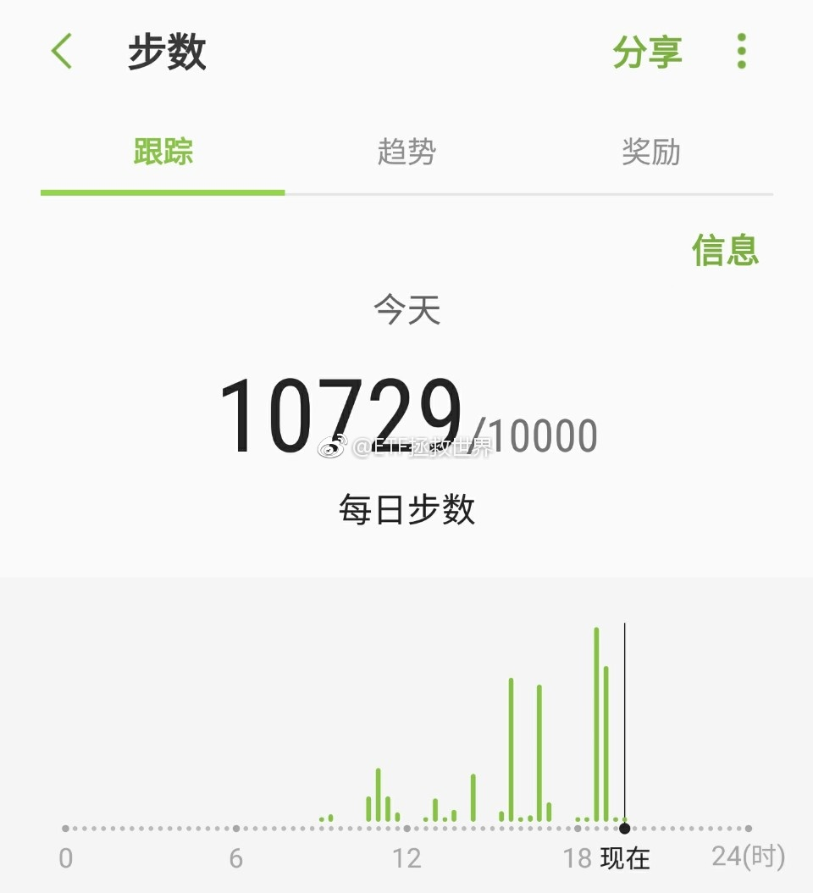

每日打卡（90）
说话假期就快过完了。今天又出去浪了，然后去剪头发。有没有跟我一样很讨厌剪头发的，抱紧我……
昨天有朋友评论，平板支撑做不过谁，就不做了。这很有意思。
其实呢，咱们这种群众体育运动，目的是什么呢。跟谁竞赛吗。我觉得，肯定不是啊。很简单，就是为了强身健体，每天都比昨天的自己好一点就足够了。
说起来，这跟投资真的很像。您说，咱们又不是基金经理，又不需要用排名吸引客户资金，每天比来比去干什么？今年你挣20%，我赚15%，难过的吃不下饭。明年你赔30%，我赔13%，好高兴啊。
是不是傻。
要比就和自己比。资产增加了没有？跑赢存款利率没有？跑赢通胀没有？跑赢货基没有？跑赢理财没有？五年十年年化是10/15还是20？
你的对手是你自己，比昨天，上个月，去年的自己好，那就值得每天高高兴兴的谢谢自己。
无论是锻炼、赚钱、明白一些做人的道理，都是如此。
说话假期就快过完了。今天又出去浪了，然后去剪头发。有没有跟我一样很讨厌剪头发的，抱紧我……
昨天有朋友评论，平板支撑做不过谁，就不做了。这很有意思。
其实呢，咱们这种群众体育运动，目的是什么呢。跟谁竞赛吗。我觉得，肯定不是啊。很简单，就是为了强身健体，每天都比昨天的自己好一点就足够了。
说起来，这跟投资真的很像。您说，咱们又不是基金经理，又不需要用排名吸引客户资金，每天比来比去干什么？今年你挣20%，我赚15%，难过的吃不下饭。明年你赔30%，我赔13%，好高兴啊。
是不是傻。
要比就和自己比。资产增加了没有？跑赢存款利率没有？跑赢通胀没有？跑赢货基没有？跑赢理财没有？五年十年年化是10/15还是20？
你的对手是你自己，比昨天，上个月，去年的自己好，那就值得每天高高兴兴的谢谢自己。
无论是锻炼、赚钱、明白一些做人的道理，都是如此。
- 